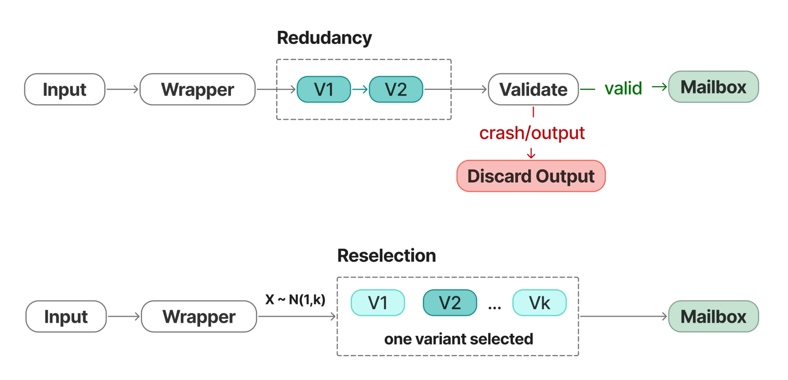

Redundancy and reselection in SubprocessBFT++ · From my research diagram (select to enlarge)
SubprocessBFT++
Resilience mechanisms such as software replication can be difficult to deploy on robotic controllers with limited computing resources and tight scan-cycle deadlines.
SubprocessBFT++ decomposes controller software into subprocesses and uses diversified variants with supervisory wrappers. The design explores redundancy and reselection as ways to limit the effects of control-flow hijacking on single-controller systems.
The work has been evaluated through simulations, fault-injection experiments, and microcontroller-oriented studies, with attention to recovery behavior and execution overhead under the evaluated assumptions.